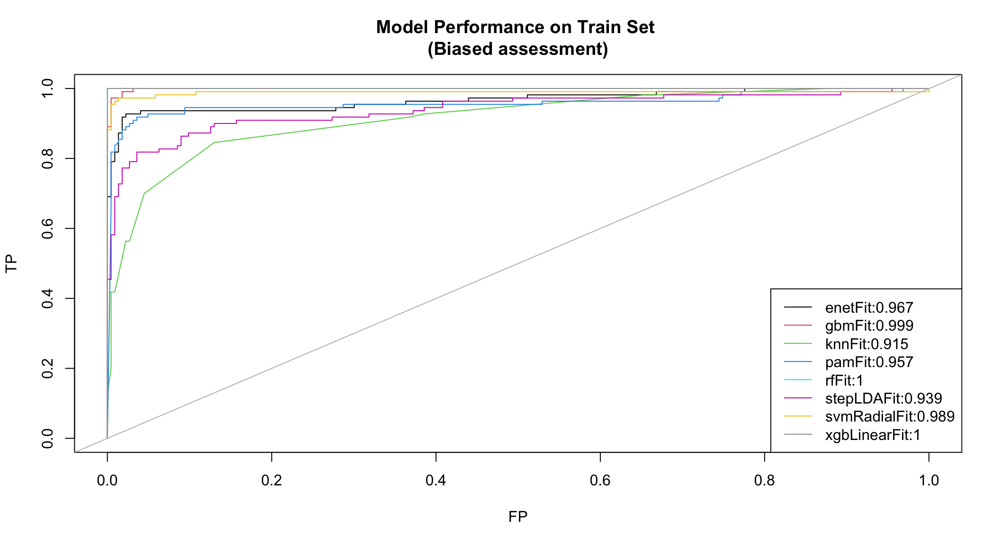
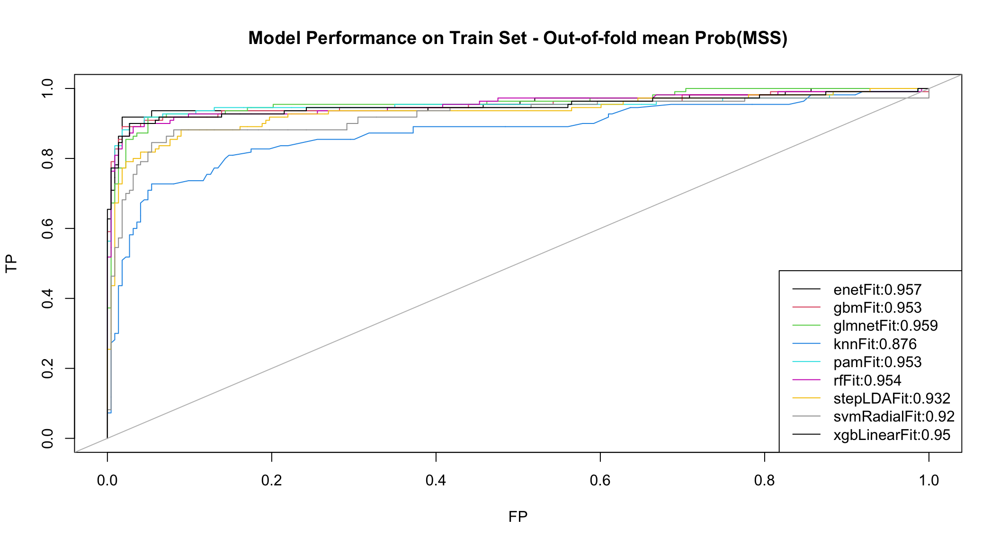
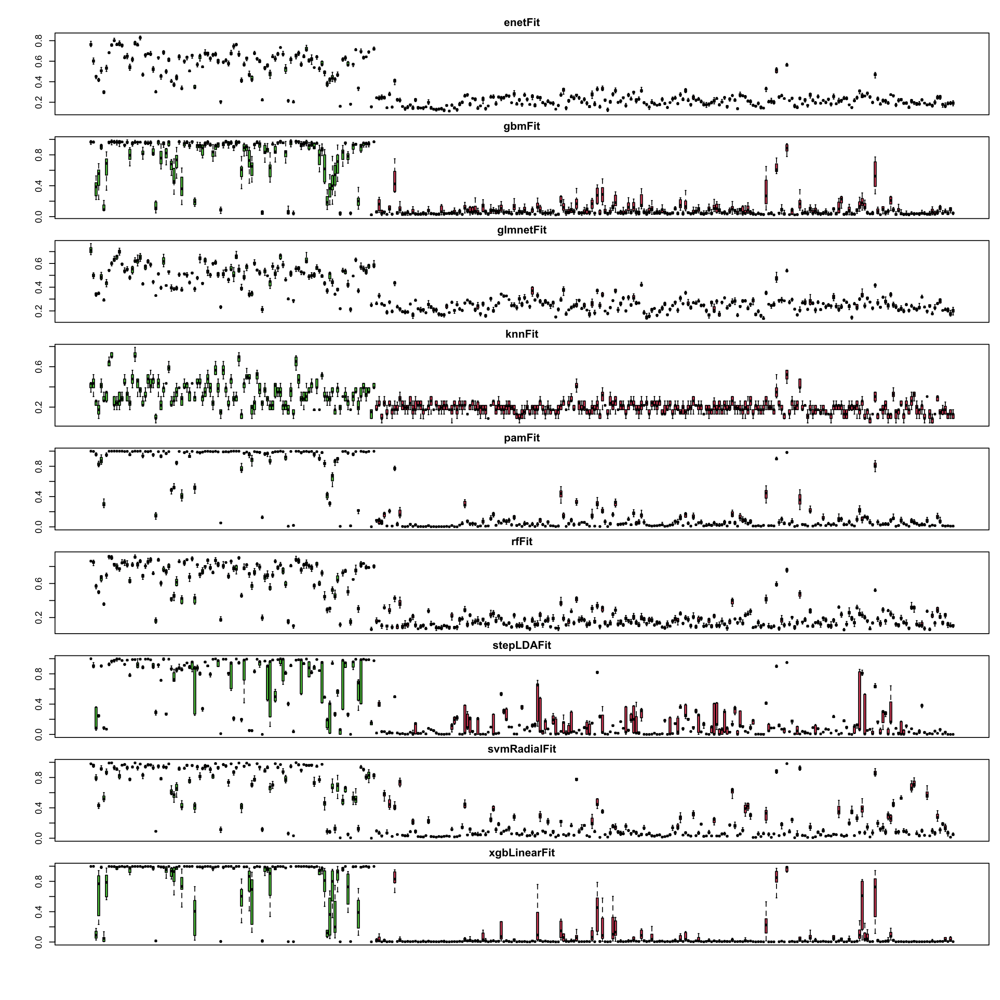

Section 4 Compare Predictive Models
Here we compare predictive models in terms of:
- Processing time
- Prediction accuracy and ROC on train
out-of-fold - Prediction accuracy and ROC on test samples
- Direct comparison of variable importance
4.1 Load Models
### BREAK CACHE
# Load Train and Test Data
load(file=file.path('RData', 'Train.Expr.mtx'))
load(file=file.path('RData', 'Test.Expr.mtx'))
load(file=file.path('RData', 'Train.Label.vec'))
load(file=file.path('RData', 'Test.Label.vec'))
CLASS1 <- as.character(sort(unique(Train.Label.vec))[1])
CLASS2 <- as.character(sort(unique(Train.Label.vec))[2])
# Load models (Only CV.5_10?)
ModelFit.vec <- list.files(file.path('RData'), 'Fit$')
FitSetCV.vec <- sapply(strsplit(ModelFit.vec, split='\\.'),
function(x) paste(x[1:3], collapse='.'))
ModelFit.lst <- split(sapply(strsplit(ModelFit.vec, split='\\.'), function(x) rev(x)[1]),
FitSetCV.vec)
# Get Model.col for plotting (only have one FitSetCV values here. could have many)
Model.col <- as.numeric(as.factor(ModelFit.lst[[1]]))
names(Model.col) <- ModelFit.lst[[1]]
cat("Found", length(ModelFit.vec), 'models:\n')## Found 10 models:## $Top30pVarGenes.CV.5_10
## [1] "enetFit" "gbmFit" "glmnetFit" "knnFit" "pamFit"
## [6] "rfFit" "stepLDAFit" "svmRadialFit" "xgbLinearFit"
##
## $Top60VarGenes.CV.10_30
## [1] "glmnetFit"4.2 Compare Times
### BREAK CACHE
Set.ModelTimes.frm <- do.call('rbind', lapply(Set.ModelFit.lst,
function(LL) c(LL$times$everything)))###, final=LL$times$final)))
knitr::kable(Set.ModelTimes.frm, digits=2,
caption="Compute times") %>%
kableExtra::kable_styling(full_width = F)| user.self | sys.self | elapsed | user.child | sys.child | |
|---|---|---|---|---|---|
| enetFit | 4.38 | 0.51 | 26.72 | 198.64 | 11.19 |
| gbmFit | 14.93 | 0.65 | 371.49 | 3434.72 | 25.49 |
| glmnetFit | 8.36 | 0.70 | 71.05 | 585.69 | 15.03 |
| knnFit | 4.16 | 0.54 | 467.10 | 4342.69 | 36.41 |
| pamFit | 4.72 | 0.61 | 26.36 | 193.36 | 11.90 |
| rfFit | 53.40 | 0.70 | 1319.92 | 11963.15 | 47.16 |
| stepLDAFit | 567.15 | 1.74 | 3980.27 | 32305.54 | 120.03 |
| svmRadialFit | 25.55 | 1.29 | 292.31 | 2465.96 | 39.68 |
| xgbLinearFit | 18.16 | 0.69 | 1900.82 | 18057.73 | 58.99 |
4.3 Compare Prediction Accuracy
4.3.1 Out-of-Fold Train Data Accuracy
Out-of-fold predictions are predictions for the left-out samples at each iteration of the cross-validated model fitting process.
- The following tabulation uses model predictions
extracted by the
predictmethod applied to fitted objects. For models that produce a probability, a threshold of 0.5 will be used to classify observations. This can give a misleading sense of relative performance.
Figures 4.2 and 4.3 must be examined together to get a good sense of relative performance.
### BREAK CACHE
Set.ModelFit.osPred.mtx.lst <- lapply(Set.ModelFit.lst,
function(MF) {
MF.pred.mtx <- MF$pred
Rep.vec <- sapply(strsplit(MF$pred$Resample, split='\\.'),'[', 2)
rowIndex.vec <- sort(unique(MF$pred$rowIndex))
Pred.mtx <- do.call('cbind', lapply(split(MF$pred, Rep.vec),
function(RepMFpred.frm)
as.character(RepMFpred.frm[match(rowIndex.vec, RepMFpred.frm$rowIndex),'pred'])))
Pred.mtx})
# Use mode over reps as prediction
############################################
Set.ModelFit.osPred.vec.lst <- lapply(Set.ModelFit.osPred.mtx.lst,
function(PRED.mtx) apply(PRED.mtx,1,function(Pred.vec)
names(table(Pred.vec))[which.max(table(Pred.vec))]))
Set.Train.osPredMode.TruthTable.frm <- do.call('rbind', lapply(Set.ModelFit.osPred.vec.lst,
function(PRED) {
truth.vec <- as.vector(table(PRED, Train.Label.vec))#/length(Train.Label.vec)
# ASSUMING MSI is FIRST LABEL of CLASS
names(truth.vec) <- c('TN', 'FP', 'FN', 'TP')
truth.vec}))
knitr::kable(data.frame(cbind(Set.Train.osPredMode.TruthTable.frm,
Set.Train.osPredMode.TruthTable.frm/length(Train.Label.vec))),
digits=2, align='c', caption='Model Out-of-Fold Accuracy - Mode') %>%
kableExtra::kable_styling(full_width = F)| TN | FP | FN | TP | TN.1 | FP.1 | FN.1 | TP.1 | |
|---|---|---|---|---|---|---|---|---|
| enetFit | 81 | 29 | 2 | 221 | 0.24 | 0.09 | 0.01 | 0.66 |
| gbmFit | 93 | 17 | 3 | 220 | 0.28 | 0.05 | 0.01 | 0.66 |
| glmnetFit | 62 | 48 | 1 | 222 | 0.19 | 0.14 | 0.00 | 0.67 |
| knnFit | 13 | 97 | 1 | 222 | 0.04 | 0.29 | 0.00 | 0.67 |
| pamFit | 96 | 14 | 4 | 219 | 0.29 | 0.04 | 0.01 | 0.66 |
| rfFit | 90 | 20 | 3 | 220 | 0.27 | 0.06 | 0.01 | 0.66 |
| stepLDAFit | 87 | 23 | 8 | 215 | 0.26 | 0.07 | 0.02 | 0.65 |
| svmRadialFit | 92 | 18 | 12 | 211 | 0.28 | 0.05 | 0.04 | 0.63 |
| xgbLinearFit | 95 | 15 | 5 | 218 | 0.29 | 0.05 | 0.02 | 0.65 |
4.3.2 Test Data Accuracy
### BREAK CACHE
suppressMessages(require(caret))
# Test - these are fitting errors
Set.Test.Pred.lst <- lapply(Set.ModelFit.lst,
function(MF) predict(MF, newdata=Test.Expr.mtx))
Set.Test.TruthTable.frm <- do.call('rbind', lapply(Set.Test.Pred.lst,
function(PRED) {
truth.vec <- as.vector(table(PRED, Test.Label.vec))#/length(Test.Label.vec)
# ASSUMING MSI is FIRST LABEL of CLASS
names(truth.vec) <- c('TN', 'FP', 'FN', 'TP')
truth.vec}))
knitr::kable(data.frame(cbind(Set.Test.TruthTable.frm,
Set.Test.TruthTable.frm/length(Test.Label.vec))),
digits=2, align='c', caption='Model Test Set Accuracy') %>%
kableExtra::kable_styling(full_width = F)| TN | FP | FN | TP | TN.1 | FP.1 | FN.1 | TP.1 | |
|---|---|---|---|---|---|---|---|---|
| enetFit | 29 | 7 | 1 | 73 | 0.26 | 0.06 | 0.01 | 0.66 |
| gbmFit | 32 | 4 | 2 | 72 | 0.29 | 0.04 | 0.02 | 0.65 |
| glmnetFit | 21 | 15 | 1 | 73 | 0.19 | 0.14 | 0.01 | 0.66 |
| knnFit | 5 | 31 | 0 | 74 | 0.05 | 0.28 | 0.00 | 0.67 |
| pamFit | 34 | 2 | 4 | 70 | 0.31 | 0.02 | 0.04 | 0.64 |
| rfFit | 32 | 4 | 1 | 73 | 0.29 | 0.04 | 0.01 | 0.66 |
| stepLDAFit | 30 | 6 | 7 | 67 | 0.27 | 0.05 | 0.06 | 0.61 |
| svmRadialFit | 0 | 0 | 0 | 0 | 0.00 | 0.00 | 0.00 | 0.00 |
| xgbLinearFit | 32 | 4 | 4 | 70 | 0.29 | 0.04 | 0.04 | 0.64 |
4.4 Compare Models in Terms of ROC
4.4.1 Training Data ROC
Train data accuracy is always perfect for models that have a large paremeter space such a random forest models. This assessment is only included here for reference purposes - we cannot judge the relative performance of models having vastly different parameter spaces based on training data results.
### BREAK CACHE
# CHANGE THIS LINE TO CLEAR CACHE
suppressMessages(require(pROC))
################################
# Train
################################
# Get predicted probabilities
Set.Train.Prob.lst <- suppressMessages(predict(Set.ModelFit.lst, type='prob'))
Set.Train.ProbClass1.mtx <- do.call('cbind',
lapply(Set.Train.Prob.lst, function(x) x[,CLASS1]))
rownames(Set.Train.ProbClass1.mtx) <- names(Train.Label.vec)
# ROC
Set.Train.roc.mtx.lst <- lapply(colnames(Set.Train.ProbClass1.mtx), function(MM)
do.call('rbind', lapply(rev(sort(unique(Set.Train.ProbClass1.mtx))),
function(TS) {
TP <- sum(Set.Train.ProbClass1.mtx[,MM][Train.Label.vec==CLASS1] > TS, na.rm=T)
FP <- sum(Set.Train.ProbClass1.mtx[,MM][Train.Label.vec==CLASS2] > TS, na.rm=T)
c(TS=TS, TP=TP, FP=FP)}))
)
names(Set.Train.roc.mtx.lst) <- colnames(Set.Train.ProbClass1.mtx)
# Get auc
Set.Train.auc.vec <- sapply(1:ncol(Set.Train.ProbClass1.mtx), function(CC)
auc(Train.Label.vec, Set.Train.ProbClass1.mtx[,CC]))
names(Set.Train.auc.vec) <- colnames(Set.Train.ProbClass1.mtx)
plot(x=range(do.call('c', lapply(Set.Train.roc.mtx.lst,
function(LL) LL[,'FP'])))/sum(Train.Label.vec==CLASS2),
y=range(do.call('c', lapply(Set.Train.roc.mtx.lst,
function(LL) LL[,'TP'])))/sum(Train.Label.vec==CLASS1),
xlab='FP', ylab='TP', type='n')
for(II in 1:length(Set.Train.roc.mtx.lst))
lines(x=Set.Train.roc.mtx.lst[[II]][,'FP']/sum(Train.Label.vec==CLASS2),
y=Set.Train.roc.mtx.lst[[II]][,'TP']/sum(Train.Label.vec==CLASS1),
col=Model.col[names(Set.Train.roc.mtx.lst)[II]])
abline(0,1, col='grey')
legend('bottomright',
legend=paste(names(Set.Train.roc.mtx.lst), ':',
round(Set.Train.auc.vec[names(Set.Train.roc.mtx.lst)],3),sep=''),
col=Model.col[names(Set.Train.roc.mtx.lst)],
lty=1)
title('Model Performance on Train Set')
Figure 4.1: Training Data ROC
4.4.2 Out-of-fold Train: Average over Repeats
### BREAK CACHE
suppressMessages(require(pROC))
# Get predicted probabilities
Set.ModelFit.osProbClass1.mtx.lst <- lapply(Set.ModelFit.lst,
function(MF) {
MF.pred.mtx <- MF$pred
Rep.vec <- sapply(strsplit(MF$pred$Resample, split='\\.'),'[', 2)
rowIndex.vec <- sort(unique(MF$pred$rowIndex))
ProbClass1.mtx <- do.call('cbind', lapply(split(MF$pred, Rep.vec),
function(RepMFpred.frm)
RepMFpred.frm[match(rowIndex.vec, RepMFpred.frm$rowIndex),CLASS1]))
ProbClass1.mtx})
#################################
# Use average osProb
#################################
Set.Train.mean_osProbClass1.mtx <- do.call('cbind', lapply(Set.ModelFit.osProbClass1.mtx.lst,
function(osProbClass1.mtx) apply(osProbClass1.mtx,1,mean)))
rownames(Set.Train.mean_osProbClass1.mtx) <- names(Train.Label.vec)
# ROC
Set.Train.mean_osProbClass1.roc.mtx.lst <-
lapply(colnames(Set.Train.mean_osProbClass1.mtx), function(MM)
do.call('rbind', lapply(rev(sort(unique(Set.Train.mean_osProbClass1.mtx))),
function(TS) {
TP <- sum(Set.Train.mean_osProbClass1.mtx[,MM][Train.Label.vec==CLASS1] > TS, na.rm=T)
FP <- sum(Set.Train.mean_osProbClass1.mtx[,MM][Train.Label.vec==CLASS2] > TS, na.rm=T)
c(TS=TS, TP=TP, FP=FP)}))
)
names(Set.Train.mean_osProbClass1.roc.mtx.lst) <- colnames(Set.Train.mean_osProbClass1.mtx)
# Get auc
Set.Train.mean_osProbClass1.auc.vec <- sapply(1:ncol(Set.Train.mean_osProbClass1.mtx), function(CC)
auc(Train.Label.vec, Set.Train.mean_osProbClass1.mtx[,CC]))
names(Set.Train.mean_osProbClass1.auc.vec) <- colnames(Set.Train.mean_osProbClass1.mtx)
plot(x=range(do.call('c', lapply(Set.Train.mean_osProbClass1.roc.mtx.lst,
function(LL) LL[,'FP'])))/sum(Train.Label.vec==CLASS2),
y=range(do.call('c', lapply(Set.Train.mean_osProbClass1.roc.mtx.lst,
function(LL) LL[,'TP'])))/sum(Train.Label.vec==CLASS1),
xlab='FP', ylab='TP', type='n')
for(II in 1:length(Set.Train.mean_osProbClass1.roc.mtx.lst))
lines(x=Set.Train.mean_osProbClass1.roc.mtx.lst[[II]][,'FP']/sum(Train.Label.vec==CLASS2),
y=Set.Train.mean_osProbClass1.roc.mtx.lst[[II]][,'TP']/sum(Train.Label.vec==CLASS1),
col=Model.col[names(Set.Train.roc.mtx.lst)[II]])
abline(0,1, col='grey')
legend('bottomright',
legend=paste(names(Set.Train.mean_osProbClass1.auc.vec), ':',
round(Set.Train.mean_osProbClass1.auc.vec,3),sep=''),
col=Model.col[names(Set.Train.mean_osProbClass1.auc.vec)], lty=1)
title('Model Performance on Train Set - Out-of-fold mean Prob(MSS)')
Figure 4.2: Out-of-fold Train: Average over Repeats
### BREAK CACHE
suppressMessages(require(pROC))
#################################
# Replot ROC keep individual rep osProbClass1
#################################
Set.Train.indiv_osProbClass1.mtx <- do.call('cbind', lapply(names(Set.ModelFit.osProbClass1.mtx.lst),
function(MODEL) {
osProbClass1.mtx <- Set.ModelFit.osProbClass1.mtx.lst[[MODEL]]
colnames(osProbClass1.mtx) <- paste(MODEL, colnames(osProbClass1.mtx),sep='.')
osProbClass1.mtx}))
rownames(Set.Train.indiv_osProbClass1.mtx) <- names(Train.Label.vec)
# ROC
Set.Train.indiv_osProbClass1.roc.mtx.lst <- lapply(colnames(Set.Train.indiv_osProbClass1.mtx), function(MM)
do.call('rbind', lapply(rev(sort(unique(Set.Train.indiv_osProbClass1.mtx))),
function(TS) {
TP <- sum(Set.Train.indiv_osProbClass1.mtx[,MM][Train.Label.vec==CLASS1] > TS, na.rm=T)
FP <- sum(Set.Train.indiv_osProbClass1.mtx[,MM][Train.Label.vec==CLASS2] > TS, na.rm=T)
c(TS=TS, TP=TP, FP=FP)}))
)
names(Set.Train.indiv_osProbClass1.roc.mtx.lst) <- colnames(Set.Train.indiv_osProbClass1.mtx)
# Get auc
Set.Train.indiv_osProbClass1.auc.vec <- sapply(1:ncol(Set.Train.indiv_osProbClass1.mtx), function(CC)
auc(Train.Label.vec, Set.Train.indiv_osProbClass1.mtx[,CC]))
names(Set.Train.indiv_osProbClass1.auc.vec) <- colnames(Set.Train.indiv_osProbClass1.mtx)
Set.Train.mean_indiv_osProbClass1.auc.vec <- sapply(split(Set.Train.indiv_osProbClass1.auc.vec,
sapply(strsplit(names(Set.Train.indiv_osProbClass1.auc.vec), split='\\.'),'[',1)),
mean)4.4.3 Compare Predicted Probabilities
With the repeated CV fitting set-up, we can examine the distribution of out-of-sample predictions. This is useful to both characterize the mode of errors occuring in a given model - are the errors due to bias or variability? - as well as chracterizing samples - some samples may be mis-labelled or hard to classify correctly.
### BREAK CACHE
if(sum(rownames(Set.Train.indiv_osProbClass1.mtx) !=
names(Train.Label.vec)))
stop("Sample ordering problem.")
# Reorder by Outcome
row.o <- order(Train.Label.vec, names(Train.Label.vec))
Col.Models.vec <- sapply(strsplit(colnames(Set.Train.indiv_osProbClass1.mtx), split='\\.'),'[',1)
par(mfrow=c(length(unique(Col.Models.vec)),1), mar=c(0,5,2,1), oma=c(5,0,1,0))
for(MOD in unique(Col.Models.vec)) {
Mod.cols <- which(Col.Models.vec==MOD)
box.out <-
boxplot(t(Set.Train.indiv_osProbClass1.mtx[row.o,Mod.cols]),
col=ifelse(Train.Label.vec[row.o]==CLASS1,3,2),
xaxt='n', outline=F)
title(MOD)
}
Figure 4.3: Predicted Probabilities
4.5 Look at Variable Importance
The caret package provides methods to extract variable importance through
the varImp function. Here we will extract these assessments
for each model and compare with genes which have been identified as associated with
MSS status in other studies:
### BREAK CACHE
MSSMSI.GeneSets.frm <- read.table(file=file.path('extData', "ColonCancerGeneSets.tab"),
header=T, sep='\t')
GeneSets.lst <- split(MSSMSI.GeneSets.frm$GeneSymbol, toupper(MSSMSI.GeneSets.frm$ListName))
GeneSets.lst <- GeneSets.lst[c('BANERJEA','CROCE','JORISSEN', 'KOINUMA', 'KRUHOFFER','MORI')]### BREAK CACHE
suppressMessages(require(caret))
suppressMessages(require(gbm))
# Load gene to probe set map
load(file=file.path('RData', 'GeneNameMap.vec'))
# Will also need the inverted map
GeneNameMap2.vec <- names(GeneNameMap.vec)
names(GeneNameMap2.vec) <- GeneNameMap.vec
Set.ModelFit.Top30.lst <- lapply(setdiff(names(Set.ModelFit.lst),
c("knnFit","sddaLDAFit","sddaQDAFit")),
function(MOD) {
#cat(MOD,'\n')
FIT <- Set.ModelFit.lst[[MOD]]
if(is.element(CLASS1, colnames(varImp(FIT)$imp)))
impVar.vec <- varImp(FIT)$imp[,CLASS1] else
impVar.vec <- varImp(FIT)$imp$Overall
top30.ndx <- rev(order(impVar.vec))[1:30]
varImp.vec <- impVar.vec[top30.ndx]
names(varImp.vec) <- rownames(varImp(FIT)$imp)[top30.ndx]
varImp.vec
})
names(Set.ModelFit.Top30.lst) <- setdiff(names(Set.ModelFit.lst),
c("knnFit","sddaLDAFit","sddaQDAFit"))
Top30.Name.vec <- unique(do.call('c', lapply(Set.ModelFit.Top30.lst, function(VV) names(VV))))
Top30.ProbeId.vec <- GeneNameMap.vec[Top30.Name.vec]
# Put together in a matrix
Top30.varImp.mtx <- do.call('cbind', lapply(Set.ModelFit.Top30.lst,
function(LL) LL[Top30.Name.vec]))
rownames(Top30.varImp.mtx) <- GeneNameMap.vec[Top30.Name.vec]
Top30.varImp.mtx[is.na(Top30.varImp.mtx)] <- 0
# Reoder by ovrall importance
varImp.med.vec <- apply(Top30.varImp.mtx,1,median)
Top30.varImp.mtx <- Top30.varImp.mtx[rev(order(varImp.med.vec)),]
Top30.varImp.frm <- data.frame(PROBEID=rownames(Top30.varImp.mtx),
Gene=GeneNameMap2.vec[rownames(Top30.varImp.mtx)],
round(Top30.varImp.mtx))
names(Top30.varImp.frm) <- sub('Fit', '', names(Top30.varImp.frm))
# Add geneset membership
Top30Genes.vec <- sapply(strsplit(Top30.varImp.frm$Gene, split='\\.'),'[',1)
Top30GeneSetElements.frm <- data.frame(do.call('cbind', lapply(GeneSets.lst,
function(GS) ifelse(is.element(Top30Genes.vec, GS),'Y',''))))
colnames(Top30GeneSetElements.frm) <- names(GeneSets.lst)
Top30.varImp.frm <- data.frame(Top30.varImp.frm, Top30GeneSetElements.frm)
o.v <- rev(order(apply(Top30.varImp.frm[,sub('Fit','',names(Set.ModelFit.Top30.lst))],
1, mean)))
DT::datatable(Top30.varImp.frm[o.v,] %>% dplyr::select(-PROBEID), rownames=F,
caption="Top 30 Features") 4.6 Classification: Discussion
- Nearest shrunken centroids does well
- The nearest shrunken centriod method described in Tibshirani et. al. [Tibshirani:2002aa] does very well both in terms of classification accuracy, computing time and simplicity of predictor. This has been our experience with many classification problems based on gene expression data.
- Lack of agreement with literature gene sets
- The variable importance assessment shows that the genes which are deemed important in the clsssifiers the we fitted have little overlap with the gene sets previously identified as being associated with MSS status. This is not a problem if we just want to build a classifier which predicts well. It is somewhat of a problem if we want to use biology to validate our empirically determined models. In that respect, the lack of agreement of gene lists across analyses is always a problem to contend with (see [27–34]).
- Models could be better optimized
- Note that we did not attempt to optimize the model tuning parameters in any way and just used the default search grids for each model. While this may be a good choice on average, better performance could be obtained from some of the models by specifying a tuning parameter space which is better suited to the problem at hand. This requires a good understanding of each model and is beyond the scope of this vignette.
- glmnet/lasso fit
- the glmnet fit selects a lasso fit by cv. The fit implicitly selects very few features and produces optimistic out-of-fold assessments of porformance. This is typical in small sample size settings.
- auc alone can be misleading
- ROC plots AUC are similar for enetFit and glmnetFit, but Figure 4.3 shows that the enetFit model provides better separation between samples belonging to the two classes. These two assessments should be examined as a set.